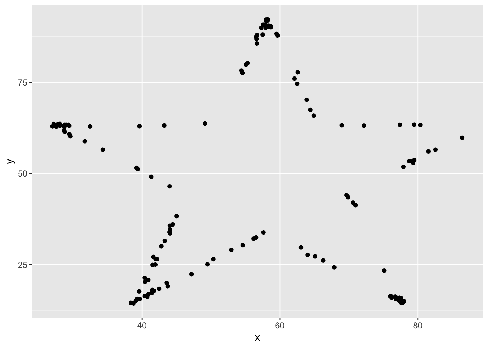

7 Generalizable plots
Remember when we edited our code to test out multiple datasets in the datasaurus dozen object? Perhaps you copy and pasted the code several time and changed the column name? This is not optimal because if you need to change the code in one instance (for example changing the x-axis label), you’ll need to revisit ever instance that you copy and pasted to code to. This approach leads you vulnerable to errors when copy and pasting.
One way to make your code robust is to bring all the factors that need editing to the start of the data. This may seem cumbersome for such a simple example where we are only changing the dataset name, but we’ll return to this concept later with more complicated examples.
Let’s grab the code we used to make one plot earlier and modify it to be more generalizable
## [1] "away" "bullseye" "circle" "dino" "dots"
## [6] "h_lines" "high_lines" "slant_down" "slant_up" "star"
## [11] "v_lines" "wide_lines" "x_shape"dataset_name <- "dino" # ADD THIS LINE
datasaurus_dozen %>%
filter(dataset == dataset_name) %>% # Remove comment # CHANGE VARIABLE NAME
ggplot(aes(x=x, y=y)) +
geom_point() # REMOVE THE + at the end of the line
Once we have converted our code to a generalized format, we can convert it into a more versatile custom function!
Curly brackets are used for inputting multiple lines of code. It is generally attached to the function that proceeds it.
# dataset_name <- "dino" # ADD THIS LINE
dino_plot <- function(data_name) {
datasaurus_dozen %>%
filter(dataset == data_name) %>% # CHANGE ARGUMENT NAME
ggplot(aes(x=x, y=y)) +
geom_point() +
theme_bw()
}
dino_plot("dino")

7.1 Exercise
We’ve now encountered round brackets (), square brackets [], and curly brackets{} - each have their own distinct functions! Take a few moments to chat with your neighbors and outline cases in which we’ve used each bracket and what is their role in R syntax.
round brackets () come after a function, function will apply to whatever is in the brackets functionName(what is being acted on)
square brackets [] Indexing, locations object[position] dataframe[rows, cols]
curly brackets {} Used in function, indicate multiple lines of related code Rmd – indicates language in code chunk
7.2 Dataset - Heart Stroke Preduction
The dataset we will be working with for today’s workshop contains clinical data collected with the aim of predicting whether a patient is likely to suffer a stroke.
The dataset can be found: https://www.kaggle.com/datasets/fedesoriano/stroke-prediction-dataset
Here is some more information about the columns in this dataset:
- id: unique identifier
- gender: “Male”, “Female” or “Other”
- age: age of the patient
- hypertension: 0 if the patient doesn’t have hypertension, 1 if the patient has hypertension
- heart_disease: 0 if the patient doesn’t have any heart diseases, 1 if the patient has a heart disease
- ever_married: “No” or “Yes”
- work_type: “children”, “Govt_jov”, “Never_worked”, “Private” or “Self-employed”
- Residence_type: “Rural” or “Urban”
- avg_glucose_level: average glucose level in blood
- bmi: body mass index
- smoking_status: “formerly smoked”, “never smoked”, “smokes” or “Unknown”*
- stroke: 1 if the patient had a stroke or 0 if not *Note: “Unknown” in smoking_status means that the information is unavailable for this patient
Let’s get started!
7.3 Exercise
Reading in the dataset can be an intimidating step when you’re just starting out with programming. Since this is a csv file, we can use the appropriately named read.csv() function. In cases when you have other file types such as .txt or .tab files that are tab deliminated, there is also a read.table() function that is more universal (but requires more parameters to let R know how your data is stored).
Read in the healthcare-dataset-stroke-data.csv into an object called heart. Check your object using head and/or summary functions. Toggle a parameter called stringsAsFactors to TRUE in order to automatically import character values as factors rather than characters
Hint: make sure the dataset is in the same directory or folder as this .Rmd file for ease of import
## id gender age hypertension heart_disease ever_married work_type
## 1 9046 Male 67 0 1 Yes Private
## 2 51676 Female 61 0 0 Yes Self-employed
## 3 31112 Male 80 0 1 Yes Private
## 4 60182 Female 49 0 0 Yes Private
## 5 1665 Female 79 1 0 Yes Self-employed
## 6 56669 Male 81 0 0 Yes Private
## Residence_type avg_glucose_level bmi smoking_status stroke
## 1 Urban 228.69 36.6 formerly smoked 1
## 2 Rural 202.21 N/A never smoked 1
## 3 Rural 105.92 32.5 never smoked 1
## 4 Urban 171.23 34.4 smokes 1
## 5 Rural 174.12 24 never smoked 1
## 6 Urban 186.21 29 formerly smoked 1## 'data.frame': 5110 obs. of 12 variables:
## $ id : int 9046 51676 31112 60182 1665 56669 53882 10434 27419 60491 ...
## $ gender : Factor w/ 6 levels "female","Female",..: 4 2 4 2 2 4 4 2 2 2 ...
## $ age : num 67 61 80 49 79 81 74 69 59 78 ...
## $ hypertension : Factor w/ 4 levels "0","1","10","10+D4972": 1 1 1 1 2 1 2 1 1 1 ...
## $ heart_disease : int 1 0 1 0 0 0 1 0 0 0 ...
## $ ever_married : Factor w/ 2 levels "No","Yes": 2 2 2 2 2 2 2 1 2 2 ...
## $ work_type : Factor w/ 8 levels "children","Govt_job",..: 5 7 5 5 7 5 5 5 5 5 ...
## $ Residence_type : Factor w/ 2 levels "Rural","Urban": 2 1 1 2 1 2 1 2 1 2 ...
## $ avg_glucose_level: num 229 202 106 171 174 ...
## $ bmi : Factor w/ 419 levels "10.3","11.3",..: 240 419 199 218 114 164 148 102 419 116 ...
## $ smoking_status : Factor w/ 4 levels "formerly smoked",..: 1 2 2 3 2 1 2 2 4 4 ...
## $ stroke : int 1 1 1 1 1 1 1 1 1 1 ...##
## 0 1 10 10+D4972
## 4612 493 4 1## Min. 1st Qu. Median Mean 3rd Qu. Max.
## 0.00000 0.00000 0.00000 0.04873 0.00000 1.00000##
## female Female male Male meal Other
## 7 2987 6 2108 1 1## N/A 28.7 28.4 26.1 26.7 27.6 27.7 23.4 27.3 27
## 201 41 38 37 37 37 37 36 36 35
## 25.1 26.4 26.9 25.5 23.5 24.8 28.9 22.2 26.5 28.3
## 34 34 34 33 31 31 31 30 30 30
## 29.4 30.3 31.4 24.2 26.6 27.5 28.1 29.1 24 24.1
## 30 30 30 29 29 29 29 29 28 28
## 25.3 27.1 27.9 28 32.3 21.5 23 24.9 25 26.2
## 28 28 28 28 28 27 27 27 27 27
## 28.5 28.6 29.7 30 30.9 31.5 24.3 24.5 25.4 28.8
## 27 27 27 27 27 27 26 26 26 26
## 29 29.2 29.5 29.6 29.9 30.1 31.1 20.1 22.7 22.8
## 26 26 26 26 26 26 26 25 25 25
## 26 28.2 32.8 33.1 23.6 23.9 25.8 25.9 27.2 30.5
## 25 25 25 25 24 24 24 24 24 24
## 31.8 32.1 35.8 20.4 24.4 26.3 27.8 29.8 30.7 33.5
## 24 24 24 23 23 23 23 23 23 23
## 21.4 22.1 22.4 23.8 24.6 24.7 27.4 29.3 31 31.9
## 22 22 22 22 22 22 22 22 22 22
## 19.5 21.3 23.1 25.6 26.8 30.8 31.3 31.6 32 (Other)
## 21 21 21 21 21 21 21 21 21 2282## 'data.frame': 5110 obs. of 12 variables:
## $ id : int 9046 51676 31112 60182 1665 56669 53882 10434 27419 60491 ...
## $ gender : Factor w/ 6 levels "female","Female",..: 4 2 4 2 2 4 4 2 2 2 ...
## $ age : num 67 61 80 49 79 81 74 69 59 78 ...
## $ hypertension : Factor w/ 4 levels "0","1","10","10+D4972": 1 1 1 1 2 1 2 1 1 1 ...
## $ heart_disease : int 1 0 1 0 0 0 1 0 0 0 ...
## $ ever_married : Factor w/ 2 levels "No","Yes": 2 2 2 2 2 2 2 1 2 2 ...
## $ work_type : Factor w/ 8 levels "children","Govt_job",..: 5 7 5 5 7 5 5 5 5 5 ...
## $ Residence_type : Factor w/ 2 levels "Rural","Urban": 2 1 1 2 1 2 1 2 1 2 ...
## $ avg_glucose_level: num 229 202 106 171 174 ...
## $ bmi : Factor w/ 419 levels "10.3","11.3",..: 240 419 199 218 114 164 148 102 419 116 ...
## $ smoking_status : Factor w/ 4 levels "formerly smoked",..: 1 2 2 3 2 1 2 2 4 4 ...
## $ stroke : int 1 1 1 1 1 1 1 1 1 1 ...Before we dive into this dataset, we get a very limited indication that the object is read in correctly by checking the Environment panel - you’ll notice the new heart appears under Data and it lets us know that there are 5110 observations (number of patients) and 12 variables (number of clinical features with entries). You can also double click the name of the object here to open up a view of the whole dataset - caution that this can cause your machine to stall if the dataset is exceptionally large and/or your machine is running on minimal memory.
7.4 Exercise
Explore the dataset! Take a look at the columns and identify some potential issues with this dataset that either warrant further investigation or correction.
There is no universally right or wrong way to do this. Perhaps the only truly incorrect way of doing this is going through the dataset which is thousands of observations line by line.